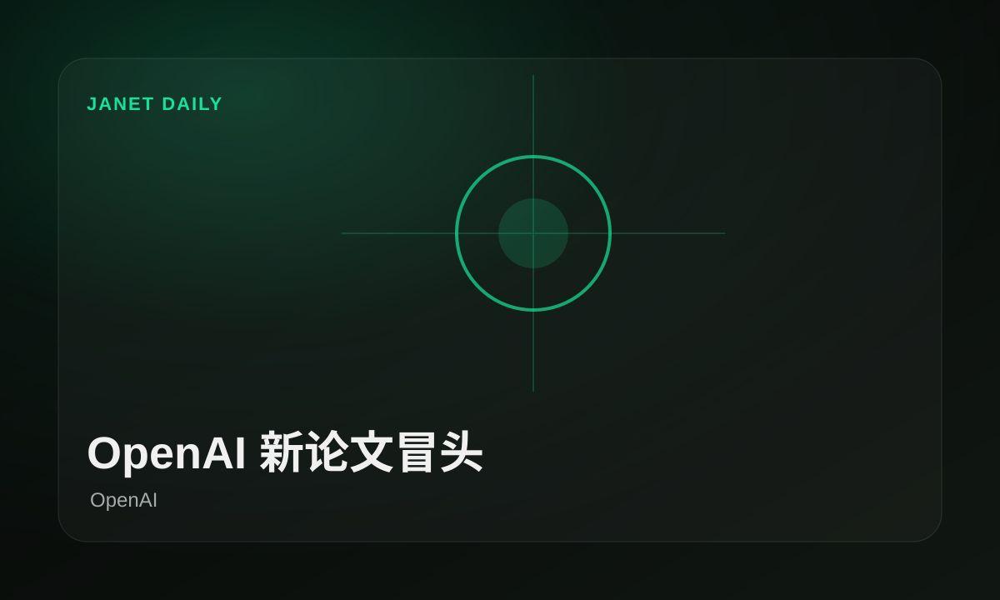
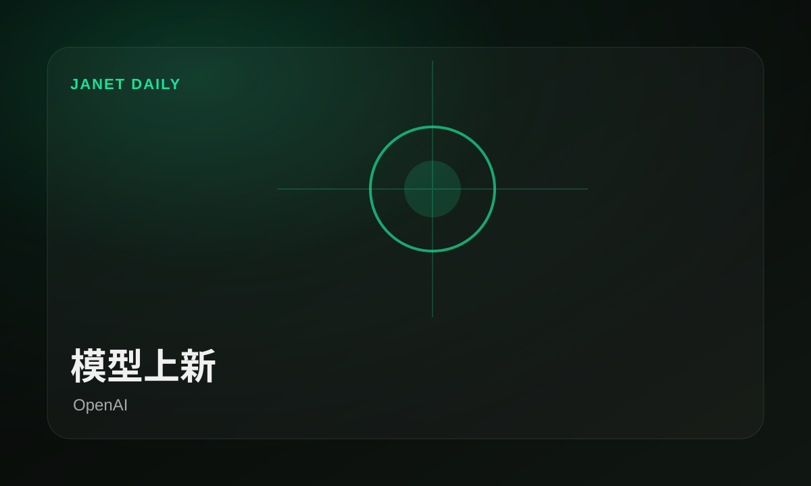
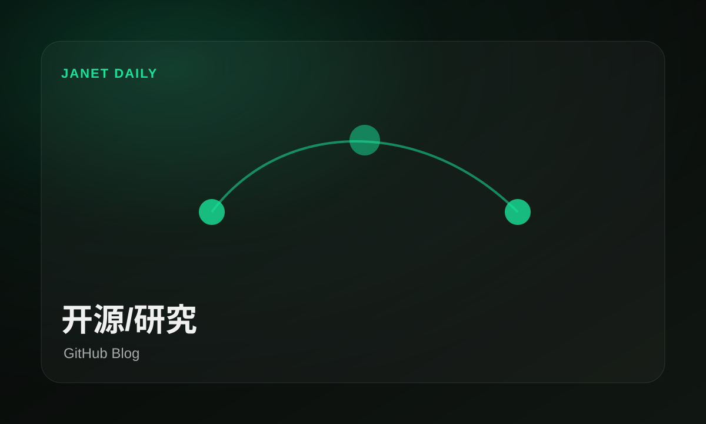
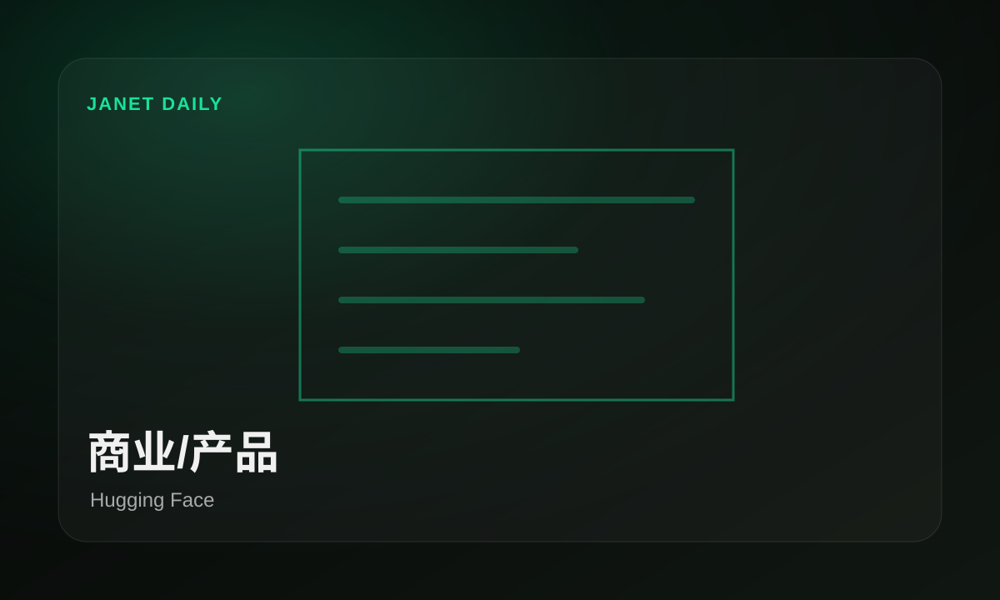

OpenAI 押注 Codex，开发开始代理化
原文：Sea's View on the Future of Agentic Software Development with CodexOpenAI 这条围绕 Codex 和软件开发展开，重点是智能体不再只做演示，而是被推向真实工程团队。
重点不是多一个按钮，是开发者每天工作的入口又被模型咬住一块。
原文今天最值得看的不是热闹数量，而是OpenAI、GitHub Blog、AWS Machine Learning Blog把AI 工具推到了台前：谁在抢入口，谁在补工具，谁还只是发声明，一眼分清。
今天窗口里，OpenAI、GitHub Blog、AWS Machine Learning Blog把产品和研究摆在台面上：不是每条都惊天动地，但它们共同说明，模型能力正在往开发、开源和研究的日常环节里挤。


模型上新OpenAI给了信号：模型上新不是口号，是今天具体新闻里能点开的变化。
OpenAI 新论文冒头，先看能否复现 · OpenAI
工具收口GitHub Blog给了信号：工具收口不是口号，是今天具体新闻里能点开的变化。
GitHub 围绕开发入口开始落到团队里 · GitHub Blog
开源补位GitHub Blog给了信号：开源补位不是口号，是今天具体新闻里能点开的变化。
GitHub 围绕开发入口开始落到团队里 · GitHub BlogOpenAI 正在把 AI 能力塞进开发者工作流，影响的是入口、工具选择和团队每天怎么交付。
OpenAI 这条围绕 Codex 和软件开发展开，重点是智能体不再只做演示，而是被推向真实工程团队。
AWS 正在把 AI 能力塞进开发者工作流，影响的是入口、工具选择和团队每天怎么交付。
AWS 正在把 AI 能力塞进开发者工作流，影响的是入口、工具选择和团队每天怎么交付。
OpenAI 这条围绕 Codex 和软件开发展开，重点是智能体不再只做演示，而是被推向真实工程团队。
OpenAI 这条围绕 Codex 和软件开发展开，重点是智能体不再只做演示，而是被推向真实工程团队。
OpenAI 这条围绕 Codex 和软件开发展开，重点是智能体不再只做演示，而是被推向真实工程团队。
OpenAI 这条围绕 Codex 和软件开发展开，重点是智能体不再只做演示，而是被推向真实工程团队。
重点不是多一个按钮，是开发者每天工作的入口又被模型咬住一块。
原文GitHub 给出了一条关于开发入口的新信号，适合和今天其他新闻一起看，不必单独拔高。
重点不是多一个按钮，是开发者每天工作的入口又被模型咬住一块。
原文AWS 正在把 AI 能力塞进开发者工作流，影响的是入口、工具选择和团队每天怎么交付。
重点不是多一个按钮，是开发者每天工作的入口又被模型咬住一块。
原文AWS 正在把 AI 能力塞进开发者工作流，影响的是入口、工具选择和团队每天怎么交付。
重点不是多一个按钮，是开发者每天工作的入口又被模型咬住一块。
原文OpenAI 这条围绕 Codex 和软件开发展开，重点是智能体不再只做演示，而是被推向真实工程团队。
OpenAI这条不必喊口号，先看它会不会把Codex变成可用入口。
原文OpenAI 这条围绕 Codex 和软件开发展开，重点是智能体不再只做演示，而是被推向真实工程团队。
OpenAI这条不必喊口号，先看它会不会把Codex变成可用入口。
原文OpenAI 这条围绕 Codex 和软件开发展开，重点是智能体不再只做演示，而是被推向真实工程团队。
OpenAI这条不必喊口号，先看它会不会把Codex变成可用入口。
原文OpenAI 这条围绕 Codex 和软件开发展开，重点是智能体不再只做演示，而是被推向真实工程团队。
OpenAI这条不必喊口号，先看它会不会把Codex变成可用入口。
原文TechCrunch 这条围绕 Codex 和软件开发展开，重点是智能体不再只做演示，而是被推向真实工程团队。
重点不是多一个按钮，是开发者每天工作的入口又被模型咬住一块。
原文MIT Tech Review 正在把 AI 能力塞进开发者工作流，影响的是入口、工具选择和团队每天怎么交付。
重点不是多一个按钮，是开发者每天工作的入口又被模型咬住一块。
原文GitHub 这条更像服务运行记录，不适合作为头条，但可以帮助判断工具稳定性和平台状态。
这类更像值班记录，能进归档，但别让它抢头条。
原文OpenAI 给出了一条关于AI 工具的新信号，适合和今天其他新闻一起看，不必单独拔高。
OpenAI这条不必喊口号，先看它会不会把AI 工具变成可用入口。
原文TechCrunch 给出了一条关于商业动作的新信号，适合和今天其他新闻一起看，不必单独拔高。
TechCrunch这条不必喊口号，先看它会不会把商业动作变成可用入口。
原文MIT Tech Review 的研究内容值得放进观察名单，它不等于产品发布，但可能预告下一波能力方向。
商业新闻的看点是钱和入口流向谁，口号先放一边。
原文AWS 这条更偏商业落地，重点看客户、价格和入口是否真的发生变化。
商业新闻的看点是钱和入口流向谁，口号先放一边。
原文NVIDIA 给出了一条关于商业动作的新信号，适合和今天其他新闻一起看，不必单独拔高。
NVIDIA这条不必喊口号，先看它会不会把商业动作变成可用入口。
原文AWS 给出了一条关于商业动作的新信号，适合和今天其他新闻一起看，不必单独拔高。
AWS这条不必喊口号，先看它会不会把商业动作变成可用入口。
原文TechCrunch 给出了一条关于商业动作的新信号，适合和今天其他新闻一起看，不必单独拔高。
TechCrunch这条不必喊口号，先看它会不会把商业动作变成可用入口。
原文TechCrunch 给出了一条关于商业动作的新信号，适合和今天其他新闻一起看，不必单独拔高。
TechCrunch这条不必喊口号，先看它会不会把商业动作变成可用入口。
原文TechCrunch 给出了一条关于商业动作的新信号，适合和今天其他新闻一起看，不必单独拔高。
TechCrunch这条不必喊口号，先看它会不会把商业动作变成可用入口。
原文TechCrunch 给出了一条关于商业动作的新信号，适合和今天其他新闻一起看，不必单独拔高。
TechCrunch这条不必喊口号，先看它会不会把商业动作变成可用入口。
原文TechCrunch 释放了开源侧信号，真正要看的是社区能否快速复现、封装，并把它变成可用工具。
开源这边的信号很直接：别只看巨头发布会，能复用的东西才会长腿。
原文TechCrunch 的研究内容值得放进观察名单，它不等于产品发布，但可能预告下一波能力方向。
TechCrunch这条不必喊口号，先看它会不会把研究信号变成可用入口。
原文MIT Tech Review 的研究内容值得放进观察名单，它不等于产品发布，但可能预告下一波能力方向。
MIT Tech Review这条不必喊口号，先看它会不会把研究信号变成可用入口。
原文